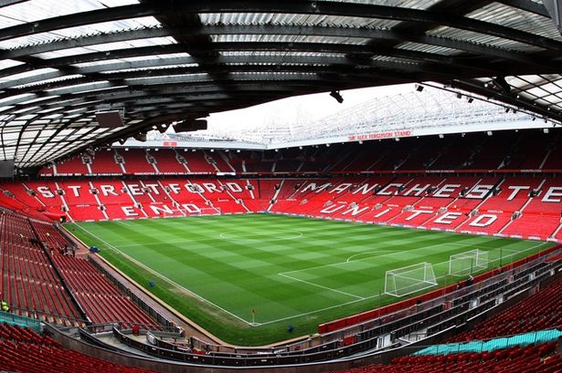

Manchester United FC
Manchester United Football Club is a professional football club based in Old Trafford, Greater Manchester, England, that competes in the Premier League, the top flight of English football. Nicknamed "the Red Devils", the club was founded as Newton Heath LYR Football Club in 1878, but changed its name to Manchester United in 1902. The club moved from Newton Heath to its current stadium, Old Trafford, in 1910. Manchester United have won the most trophies in English club football, including a record 20 League titles, 12 FA Cups, five League Cups and a record 21 FA Community Shields. They have won the European Cup/UEFA Champions League three times, and the UEFA Europa League, the UEFA Cup Winners' Cup, the UEFA Super Cup, the Intercontinental Cup and the FIFA Club World Cup once each. In 1968, under the management of Matt Busby, 10 years after eight of the club's players were killed in the Munich air disaster, they became the first English club to win the European Cup. Alex Ferguson is the club's longest-serving and most successful manager, winning 38 trophies, including 13 league titles, 5 FA Cups and 2 UEFA Champions League titles, between 1986 and 2013. In the 1998–99 season, under Ferguson, the club became the first in the history of English football to achieve the European treble of the Premier League, FA Cup and UEFA Champions League. In winning the UEFA Europa League under José Mourinho in 2016–17, they also became one of five clubs to have won the original three main UEFA club competitions (the Champions League, Europa League and Cup Winners' Cup). Manchester United is one of the most widely supported football clubs in the world, and has rivalries with Liverpool, Manchester City, Arsenal and Leeds United. Manchester United was the highest-earning football club in the world for 2016–17, with an annual revenue of €676.3 million and the world's third most valuable football club in 2019, valued at £3.15 billion $3.81 billion. After being floated on the London Stock Exchange in 1991, the club was taken private in 2005 after a purchase by Malcolm Glazer valued at almost £800 million, of which over £500 million of borrowed money became the club's debt. From 2012, some shares of the club were listed on the New York Stock Exchange, although the Glazer family retains overall ownership and control of the club.
